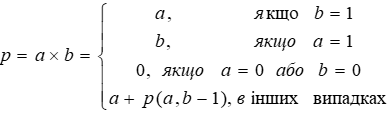

Виконавець
| Посада: | Студент |
| Курс: | IV |
| Група: | ІПЗ-42 |
| ПІБ: | Іваненко А.Ю |
| Рік навчання: | 2021-2022 |
Мета
Сформувати декларативне мислення в галузі програмування завдяки використанню чистих функцій,
рекурсій замість циклів, запобіганню даних, що змінюються. Опанувати застосування рекурсивних функцій для обчислювальних процесів.
Умови задач
Задача 1

Задача 2
Структура програми
Схема задачі 1
Схема задачі 2
Обгрунтування вибору середовища та мови функціонального програмування
Online Clisp IDE https://www.jdoodle.com/execute-clisp-online/ Середовище вибране через: a) - Легкий зрозумілий інтерфес b) - Не потрібно нічого встановлювати на комп'ютер. Мова Sheme вибрана через: а) - Лекції ведуться на цій мові. b) - Простий синтаксис.
Код програми з коментарями
Код програми 1
(define (p/r ) ; читання з консолі
(string->number (read-line)))
(define (f1 a b); об'явлення зовнішньої функції
(define (f2 a b acc); об'явлення внутрішньої функції
(if (= b 1) ; перевірка умови
( + acc a ); додати до загальної суми а
(if (= a 1);
(+ acc b);додати до загальної суми в
(if (= (* a b) 0);
acc; повернути загальну відповідь
(f2 a (- b 1) (+ acc a) ))))); стрибнути в наступну ітерацію рекурсії
(if (< b 0); перевірка на коректність даних
(display "Невірний параметр!");
(f2 a b 0)))
( display (f1 (p/r) (p/r))); запуск функції
Код програми 2
(define (p/r ); ввід
(string->number (read-line)))
(define (f1 k s); зовнішня функція
(define ( f2 k s n acc ); внутрішня функція
(if ( or (<(* k 9) s) (< s 0) );первірка на можливість
acc
(if ( = k 1); перевірка на останій розряд
(+ acc 1)
(if (= n 10); перевірка на переповнення одного розряду
acc
(f2 k s (+ n 1) (f2 (- k 1) (- s n) 0 acc ) ) ;рекурсивний виклик функції
))
)
)
(if (< (* k 9) s)
0
( f2 k s 1 0)))
( display (f1 (p/r) (p/r)))
Посилання на проект з вихідним кодом
Скрішоти результаів
програма 1
програма 2
Аналіз достовірності результатів
Перша завдання є реалізування множення через рекурсію. Як можна помітити результати тестів співпадають з очікуваними значеннями
В другій задачі було протестовано даний приклад, і алгоритм вивів очікуваний результат
Висновки
В результаті роботи було вирішено дві заданні програмні задачі за допомогою мови Shema.Перша задача була вирішена за допомогою хвостової рекурсії.
Друга задача була вирішена за допомогою звичайної рекурсії.